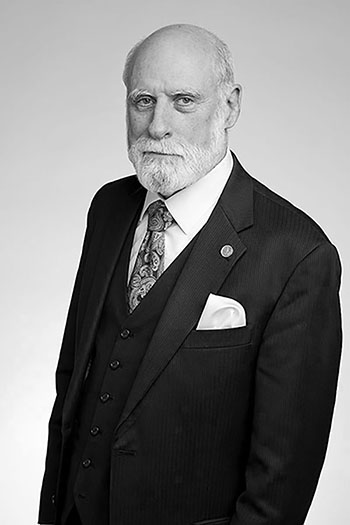
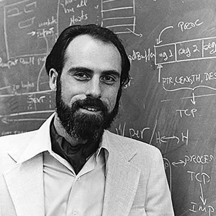
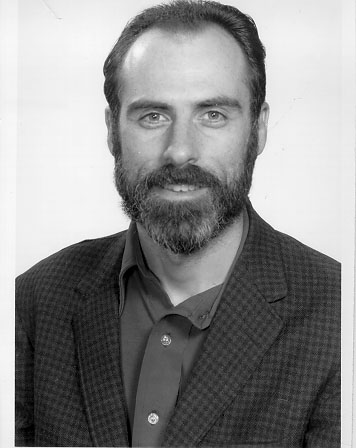
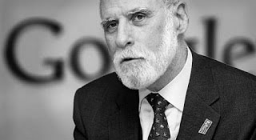
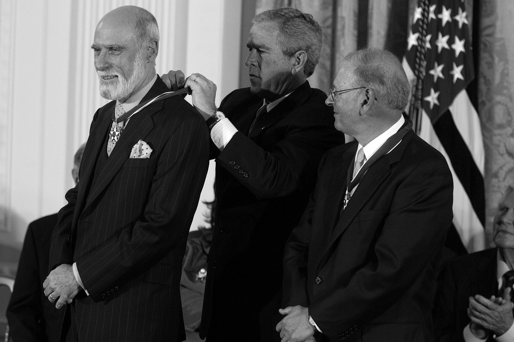

Vint Cerf at the Royal Society admissions day in 2016
Timeline of Vint Cerf´s life and career
Part 1: Stanford and UCLA

Cerf at UCLA
- 1943 - born in New Haven, Connecticut
- 1965 - receives Bachelor of Science (B.S.) at Stanford, and graduates the same year
- September 1965 to June 1967 - works on Quicktran at IBM, a Fortran-based time-sharing system
- August 1969 - as a Graduate Student at UCLA, joins the Network Working Group that discusses the ARPANET. He works for Leonard Kleinrock as UCLA gets the first ARPANET node
- 1970 - receives Master’s Degree in Computer Science
- 1972 - receives Ph.D in Computer Science
Part 2: The Internet is born

Cerf at the age when he invented the term of the Internet
- 1973 - Cerf and Kahn give an essential seminar to networkers around the world
- 1974 - a Protocol for Packet Network Intercommunication is published
- 1976 - moves to IPTO in Washington, DC as program manager for networking
- 1978 - split TCP into TCP and IP
Part 3: MCI, ISOC, and Google

Vint Cerf as Vice President in Google Inc
- 1986 - Cerf and Kahn cofound the CNRI (Corporation for National Research Initiatives). Cerf is Vice President
- 1991 - Cerf and Kahn found the ISOC, or Internet Society. Cerf is president of ISOC from 1992-1995
- 1995 - Rejoins MCI as Senior Vice President
- 1999 - Serves a term as Chairman of the Board for MCI
- 2002 - MCI is accused of an $11 Billion fraud scandal. This triggers the downfall of MCI Mail and the entire company
- 2003 - MCI Mail is decommissioned
- 2005 - Joins Google as Vice President and Chief Internet Evangelist. He still has this role today
Part 4: Special Honors

Vint Cerf is taking a Presidential medal of freedom by the President of the US George Bush
- 1994 - People Magazine identifies Cerf as one of the year’s "25 most Intriguing People."
- 1997 - Cerf and Kahn are awarded National Medal of Technology by President Bill Clinton for creating the Internet
- 2004 - Cerf and Kahn earn Alan M. Turing award, known as the “Nobel Prize of Computer Science
- 2005 - Is awarded Presidential Medal of Freedom by George W. Bush
- 2006 - Is inducted into Internet Hall of Fame
- 2008 - Cerf and Kahn receive Japan Prize
- 2010 - Receives Lifetime Webby Award
- 2011 - Is officially named a Stanford Engineering School “hero” for his work on the Internet
- 2011 - Receives Lifetime Achievement award from Oxford Internet Institute